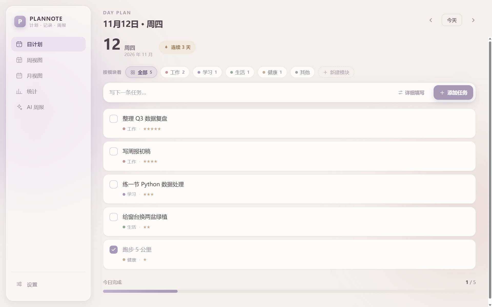
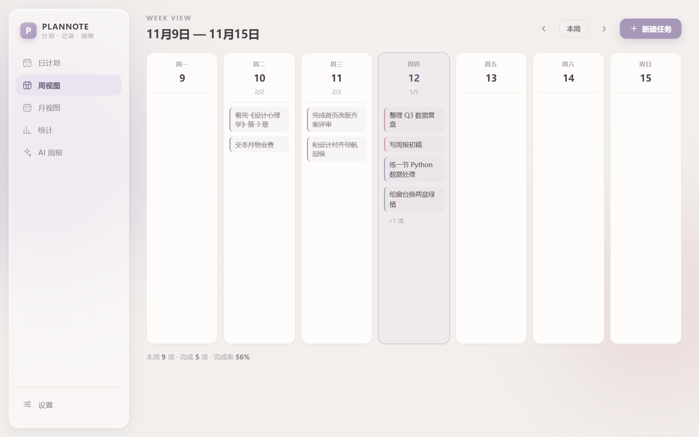
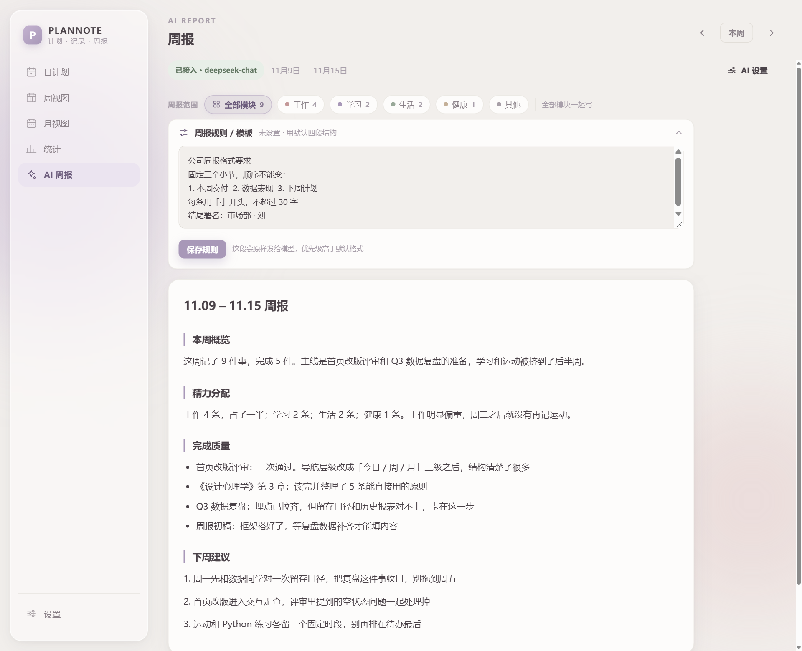

想不起做过什么
一周过去，具体交付了什么全靠翻聊天记录和邮件找线索，最后只能写「推进了若干事项」。
个人计划管理 · 纯前端 · 数据留在本机
给要交日报、周报的上班族。不用注册、不用安装， 记下的每件事只存在你自己的设备上。
无需登录 · 可装到桌面和手机 · 断网也能记

打开文档那一刻，真正卡住的是另一件事。
一周过去，具体交付了什么全靠翻聊天记录和邮件找线索，最后只能写「推进了若干事项」。
待办在备忘录，结果在群里，花了多久只有自己知道。拼起来要半小时，写出来只剩三行。
「积极推进」「持续跟进」，这类词领导一眼看得出是在凑字数，反而扣分。
没有项目管理、没有团队协作、没有甘特图。就是一个人的计划本。
只写一句话也能存下，模块、优先级、时间都可以之后补。日、周、月三个视角看的是同一批数据，不用重复录入。

把公司模板、格式要求、历史样例粘进「周报规则」，生成时它优先于默认结构。标题、小节、落款都照你的来，不用每次手动改。

没有账号系统，没有云端数据库。记录存在浏览器的本地数据库里，别人打不开，我也拿不到。

下面这份由真实模型生成，只把任务记录喂了进去，没有做人工修改。 换到你手上，内容会是你自己那一周的事。

AI 周报需要填一个自己的 API Key（支持 OpenAI 兼容接口）。 其余功能——记录、视图、统计、备份——开箱可用，不需要联网。
这部分是给同行看的：为什么这么做，以及代价是什么。